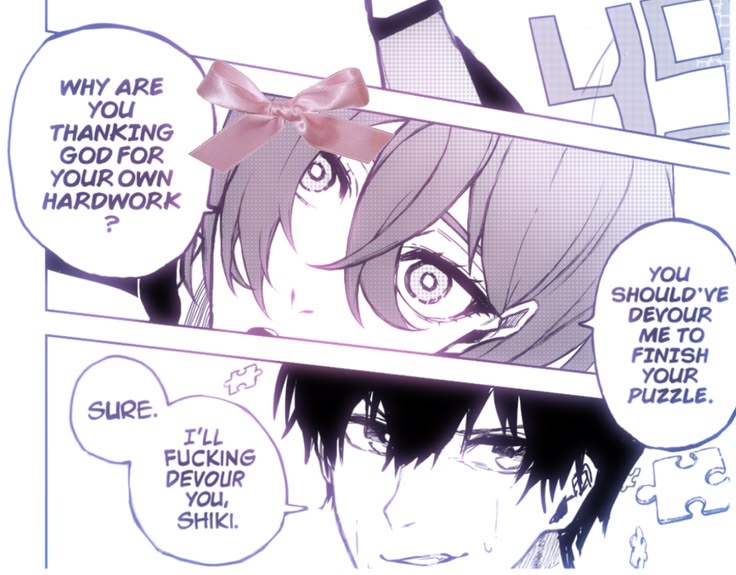
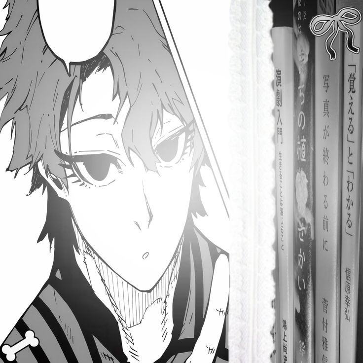

Welcome y'all!!! So, I made this website for the Blue Lock Fans who LOVES making OCs but... They're not well recognized. In order to be well recognized again, I'll happily add your OCs or Canon Blue lock Characters here!

